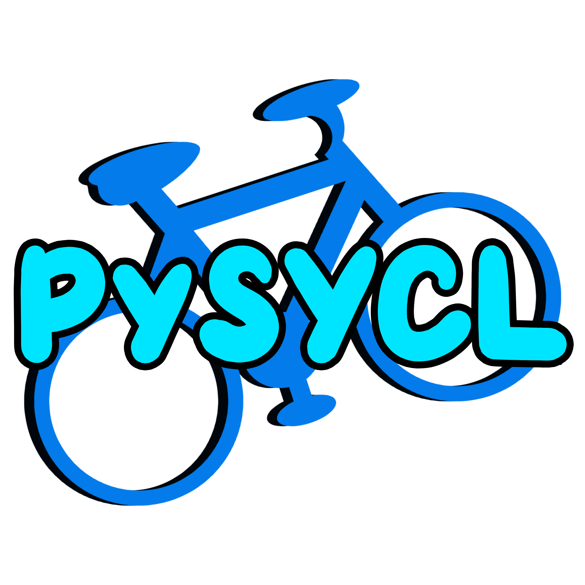

PySYCL
PySYCL is an open-source Python interface for SYCL that enables Python applications to leverage SYCL-based functionalities for heterogeneous computing. PySYCL aims to abstract away the complexities of GPU programming and provide to Python users an easy to use numerical library that efficiently targets hardware accelerators. The benefits to PySYCL is both accessibility to the large python community and development towards seamless integration with popular Python libraries, such as numpy, matplotlib, and pytorch.